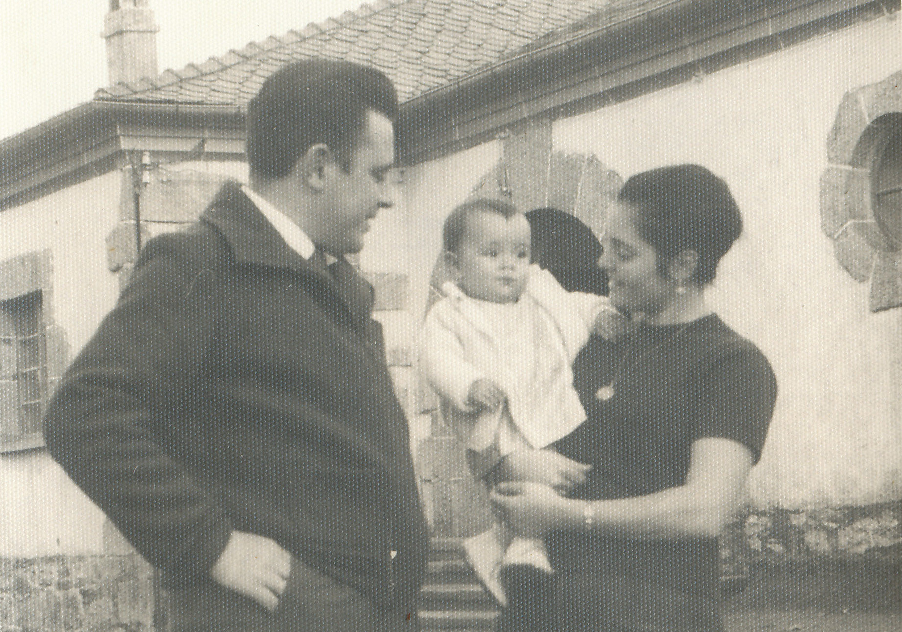
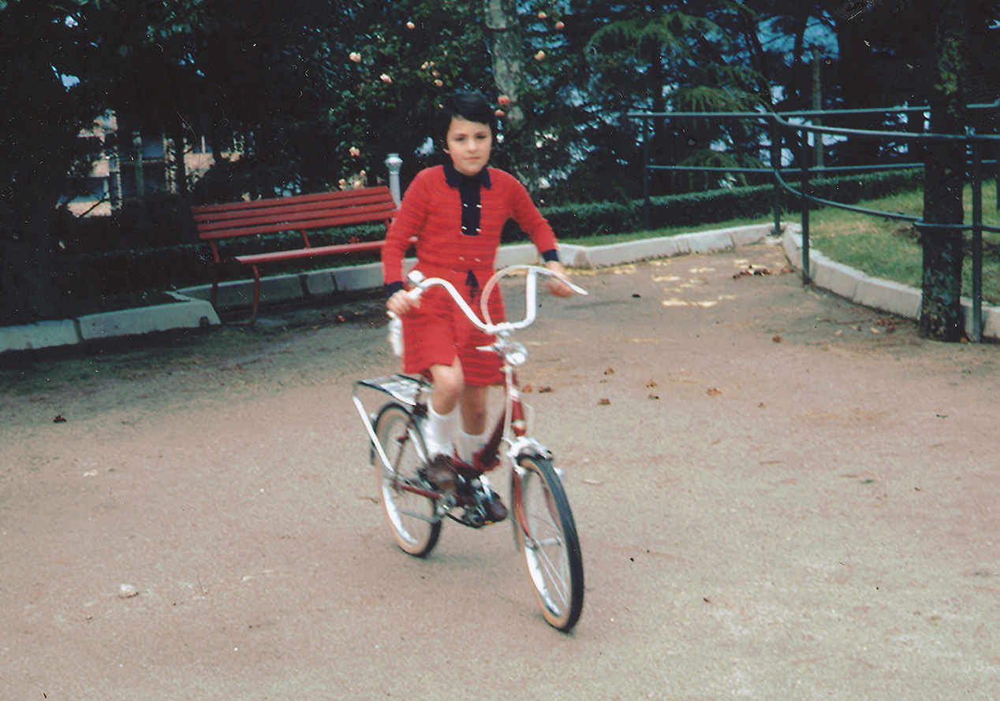
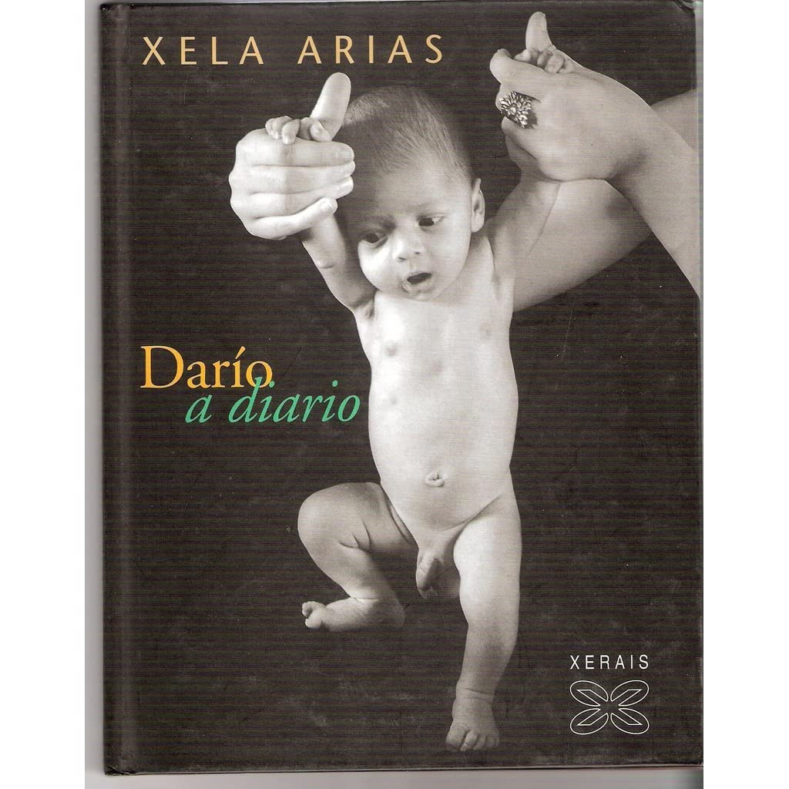

XELA ARIAS
1962-2003
Aquela nena de Sarria...
Foi, ao nacer,María de los Ángeles, sería despois María dos Anxos, en 1984 cambia o nome polo seu equivalente en galego, e acabaría sendo o que ela era, Xela, en 1995. A escolla do nome propio e a perseveranza no tempo para que así constase oficialmente, evidencian o alto grao de conciencia idiomática, á que contribuíu o ambiente familiar que nutriu desde os primeiros anos a súa estima da lingua.
"Escribo en galego porque estou aquí e, desde logo,
Galicia pertence, aínda, aos derrotados"
Nacemento
1962
Nada en Sarria o 4 de marzo de 1962,filla de Valentín Arias López e Amparo Castaño López,é a maior de cinco irmáns
Granxa de barreiros
1965
Os tres primeiros anos de vida decorren na contorna da Granxa de Barreiros, e o Colexio Fingoi de Lugo, no que inicia Xela Arias estudos de primaria
Cambio de vida ..Vigo
1969
A familia trasládase a Vigo, cidade decisiva na biografía e na obra dunha “nena de barrio e vida proletaria”, nas súas palabras.Completa ensino primario na Escola Nacional Graduada de Sárdoma en Moledo onde o seu pai exerce como mestre.
Estudos e traballo
1976 — 1979

En 1976 ingresou no Instituto Castelao do barrio do Calvario . Facendo o COU abandonou os estudos, e comezou a traballar en Edicións Xerais de Galicia, desde o seu nacemento en 1979, canda Xulián Maure Rivas e Roberto Pérez Pardo,como oficinista.
Publicacións en xornais e revistas
1980
Publicou en xornais e revistas coma A Nosa Terra, Diario 16 de Galicia, Faro de Vigo, Jornal de Notícias do Porto, Dorna, Tintimán, Carel ou Katarsis, colaborou en publicacións coma Festa da Palabra Silenciada, Luzes de Galiza ou Boletín Galego de Literatura e formou parte do consello de redacción de Viceversa, revista galega de tradución.
Entra na asociación de escritores
1986
En 1986 ingresou na Asociación de Escritores en Lingua Galega. En 1991 rexistrou as letras para o grupo musical Desertores e retomou os estudos, iniciando Filoloxía Hispánica na Universidade de Vigo, licenciándose en 1996 pola Universidade de Santiago de Compostela,e iniciando a especialidade en galego-portugués.
Comparte a súa vida
1992
No verán de 1992 casou co fotógrafo e matemático ourensán, residente en Vigo, Xulio Gil Rodríguez (1954), con quen en 1994 tivo o seu único fillo, Darío; separáronse no ano 2002.
Profesora
1999
No curso 1999-2000comezou a exercer como profesora substituta de ensino secundario, de lingua e literatura castelá, nos institutos Terra de Xallas (Santa Comba), Paralaia (Moaña), Valle-Inclán (Pontevedra), Xelmirez II (Santiago de Compostela) e Valadares II (Vigo). En anos seguintes foi docente en Chapela (Redondela), A Sangriña (A Guarda) e Álvaro Cunqueiro (Vigo).
A súa fin
2003
En novembro do ano 2003 Arias finou dun ataque ao corazón nun hospital de Vigo, con corenta e un anos de idade.Foi soterrada no cemiterio vigués de Pereiró.
"Tan intensas e punxentes como as súas arelas de liberdade, independencia e xustiza,
eran nela o sentido e mais a práctica da solidariedade."
Máis Xela+